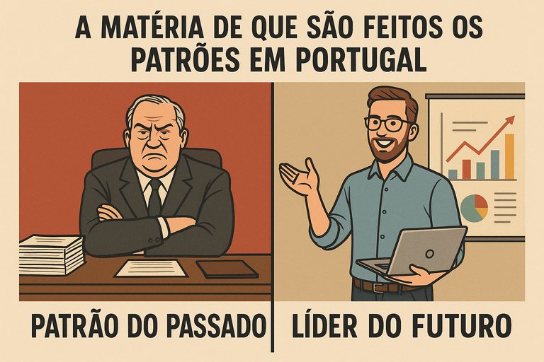

Publicado em 2025-06-06 22:16:31
Ainda hoje, em pleno século XXI, Portugal continua dominado por uma fauna empresarial formada à imagem do cacique, do pequeno tirano de bairro com pretensões de grande líder.
Os nomes mudam, os tempos mudam, os discursos modernizam-se…
Mas no fundo, a massa de que são feitos muitos patrões portugueses continua a ser a mesma: dura, rija, conservadora e moldada pelo medo da mudança.
Ele acha que sabe tudo.
Não ouve, impõe.
Não lidera, ordena.
Não estimula, controla.
Na sua visão, o colaborador ideal:
A cultura empresarial portuguesa ainda gira em torno de um “eu mando, tu fazes” que remonta aos tempos do latifúndio e da fábrica do século XIX.
A maioria destes patrões foi feita de três ingredientes:
Não há formação.
Não há literacia de gestão.
Não há visão de futuro.
Mas há ego — muito.
E uma repulsa profunda por quem pensa diferente, age melhor ou exige mais.
Enquanto o mundo fala de IA, transição digital, ESG e culturas horizontais, muitas empresas portuguesas ainda vivem como se estivéssemos em 1983.
Precisamos de patrões com coragem de sair da sombra do caciquismo e da cultura da obediência cega.
Porque liderar não é mandar. É inspirar, construir, multiplicar.
Artigo de Augustus Veritas